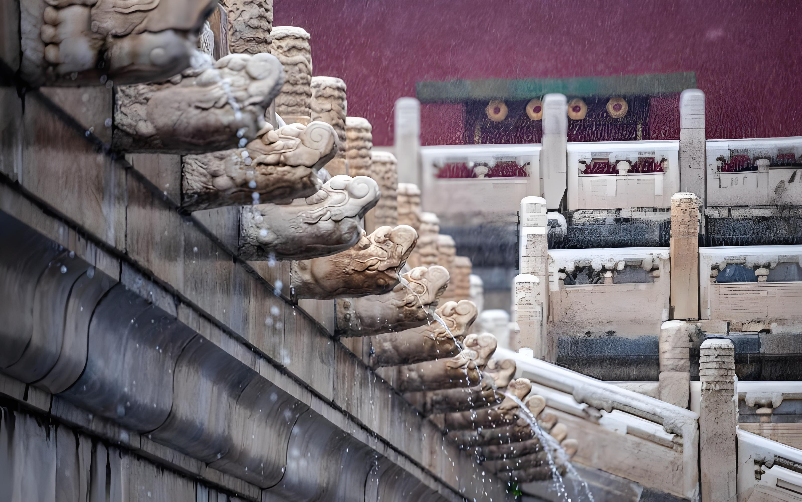

The Forbidden City (Chinese: 紫禁城) is the imperial palace complex in the center of the Imperial City in Beijing, China. It was the residence of 24 Ming and Qing dynasty Emperors, and the center of political power in China for over 500 years from 1420 to 1924. The palace is now administered by the Palace Museum.
As a UNESCO World Heritage Site, it is one of the most popular tourist attractions in the world. The Forbidden City is arguably the most famous palace in all of Chinese history, and is the largest preserved royal palace complex still standing in the world.
Unique drainage system